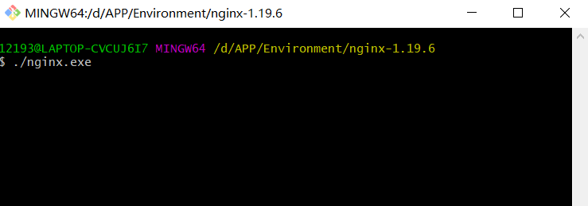

HTTP协议原理和实践
1. HTTP协议基础
1.1 五层模型


-
物理层：主要作用是定义物理设备如何传输数据
-
数据链路层：在通信的实体间建立数据链路连接
-
网络层：为数据在结点之间传输创建逻辑链路
- 传输层：向用户提供可靠的端到端（End-to-End）服务（传输层向高层屏蔽了下层数据通信的细节）
- 应用层：为应用软件提供了服务（屏蔽了网络传输相关细节）
HTTP 协议的传输过程就是通过协议栈逐层向下，每一层都添加本层的专有数据，层层打包，然后通过下层发送出去。接收数据是则是相反的操作，从下往上穿过协议栈，逐层拆包，每层去掉本层的专有头，上层就会拿到自己的数据。下层的传输过程对于上层是完全“透明”的，上层也不需要关心下层的具体实现细节。
1.2 HTTP协议简介
HTTP是什么？
HTTP 是一个在计算机世界里专门在两点之间传输文字、图片、音频、视频等超文本数据的约定和规范
HTTP是 Hyper Text Transfer Protocol **（超文本传输协议）**的缩写。它的发展是万维网协会和Internet工作小组IETF合作的结果。它确立了一种计算机之间交流通信的规范，以及相关的各种控制和错误处理方式。
HTTP是一个应用层协议，由请求和响应构成，是一个标准的客户端服务器模型。
因为 HTTP 是一个协议，是一种计算机间通信的规范，所以它不存在“单独的实体”。它不是应用程序，也不是操作系统，更不是 Web 服务器。但 HTTP 又与应用程序、操作系统、Web 服务器密切相关，在它们之间的通信过程中存在，而且是一种“动态的存在”，是发生在网络连接、传输超文本数据时的一个“动态过程”。
在互联网世界里，HTTP 通常跑在 TCP/IP 协议栈之上，依靠 IP 协议实现寻址和路由、TCP 协议实现可靠数据传输、DNS协议实现域名查找、SSL/TLS 协议实现安全通信。此外，还有一些协议依赖于它，例如 WebSocket、HTTPDNS 等。这些协议相互交织，构成了一个协议网，而 HTTP 处于中心地位。
把这些综合起来，使用递归缩写方式，我们可以把 HTTP 定义为“与 HTTP 协议相关的所有应用层技术的总和”
1.3 HTTP协议发展历史
史前时期
20 世纪 60 年代，美国国防部高等研究计划署建立了 ARPA 网，它有四个分布在各地的节点，被认为是如今互联网的“始祖”。最早的阿帕网还是非常简陋的，网络控制协议Network Control Protocol**（NCP）**是阿帕网中连接不同计算机的通信协议。
NCP诞生两年后，开发者温特·瑟夫和罗伯特·卡恩一起开发了一个阿帕网的下一代协议，并在 1974 年发表了以分组、序列化、流量控制、超时和容错等为核心的一种新型的网络互联协议，一举奠定了 TCP/IP 协议的基础。
由于具有良好的分层结构和稳定的性能，TCP/IP 协议迅速战胜其他竞争对手流行起来，并在 80 年代中期进入了 UNIX 系统内核，促使更多的计算机接入了互联网。
TCP/IP 的成功不是偶然的，而是综合了几个因素后的结果：
- TCP/IP 是免费或者是少量收费的，这样就扩大了使用人群
- TCP/IP 搭上了 UNIX 这辆时代快车，很快推出了基于套接字（socket）的实际编程接口
- TCP/IP 来源于实际需求，TCP/IP 解决了实际问题，并且在实际中不断完善
创世纪
1989 年，任职于欧洲核子研究中心的Tim Berners-Lee发表了一篇论文，提出了在互联网上构建超链接文档系统的构想。这篇论文中他确立了三项关键技术。
URI：Uniform Resource Identifier即统一资源标识符，包括URL和URN，作为互联网上资源的唯一身份HTML：即超文本标记语言，描述超文本文档HTTP：即超文本传输协议，用来传输超文本
基于它们，就可以把超文本系统完美地运行在互联网上，让各地的人们能够自由地共享信息，蒂姆把这个系统称为World Wide Web，也就是我们现在所熟知的 Web
HTTP/0.9
-
只有一个命令GET
-
没有HEADER等描述数据的信息
-
服务器发送完毕，就关闭TCP连接
20 世纪 90 年代初期的互联网世界非常简陋，计算机处理能力低，存储容量小，网速很慢，还是一片“信息荒漠”。网络上绝大多数的资源都是纯文本，很多通信协议也都使用纯文本，所以 HTTP 的设计也不可避免地受到了时代的限制。
这一时期的 HTTP 被定义为 0.9 版，结构简单，为了便于服务器和客户端处理，它也采用了纯文本格式。蒂姆最初设想的系统里的文档都是只读的，所以只允许用GET动作从服务器上获取 HTML 文档，并且在响应请求之后立即关闭连接，功能非常有限。
HTTP/0.9 虽然很简单，但作为一个“原型”，充分验证了 Web 服务的可行性。
HTTP/1.0
- 增加了 HEAD、POST 等命令
- 增加了响应状态码
Status code，标记可能的错误原因 - 增加了 HTTP Header，让 HTTP 处理请求和响应更加灵活
- 引入了协议版本号概念
- 传输的数据不再仅限于文本
1993 年，美国国家超级计算应用中心开发出了 Mosaic，是第一个可以图文混排的浏览器，随后又在 1995 年开发出了服务器软件 Apache，简化了 HTTP 服务器的搭建工作。
同一时期，计算机多媒体技术也有了新的发展：1992 年发明了 JPEG 图像格式，1995 年发明了 MP3 音乐格式。
这些新软件新技术一经推出立刻就吸引了广大网民的热情，更的多的人开始使用互联网，研究 HTTP 并提出改进意见，甚至实验性地往协议里添加各种特性，从用户需求的角度促进了 HTTP 的发展。
在这些已有实践的基础上，经过一系列的草案，HTTP/1.0 版本在 1996 年正式发布。它在多方面增强了 0.9 版，形式上已经和我们现在的 HTTP 差别不大。
但是HTTP/1.0 并不是一个“标准”，只是记录已有实践和模式的一份参考文档，不具有实际的约束力，相当于一个“备忘录”。
HTTP/1.1
- 明确了连接管理，允许持久连接
- 增加了 PUT、DELETE 等新命令
- 增加了缓存管理和控制
- 允许响应数据分块**（chunked）**，利于传输大文件
- 增加 Host ，让互联网主机托管成为可能
1995 年，网景的 Netscape Navigator 和微软的 Internet Explorer 开始了著名的“浏览器大战”，都希望在互联网上占据主导地位。最终微软的 IE 取得了胜利。不可否认的是，它再一次极大地推动了 Web 的发展，HTTP/1.0 也在这个过程中经受了实践检验。
在“浏览器大战”结束之后的 1999 年，HTTP/1.1 发布了 RFC 文档，编号为 2616，正式确立了延续十余年的传奇。HTTP/1.1 是对 HTTP/1.0 的小幅度修正。但一个重要的区别是：它是一个“正式的标准”。这意味着今后互联网上所有的浏览器、服务器、网关、代理等等，只要用到 HTTP 协议，就必须严格遵守这个标准。HTTP/1.1 开启了后续的“Web 1.0”“Web 2.0”时代。
由于 HTTP/1.1 太过庞大和复杂，所以在 2014 年又做了一次修订，原来的一个大文档被拆分成了六份较小的文档，编号为 7230-7235，优化了一些细节，但此外没有任何实质性的改动。
HTTP/2
-
所有数据以二进制传输，不再是纯文本
-
头信息压缩以及推送等提高效率的功能
-
可发起多个请求，废弃了 1.1 里的管道
-
增强了安全性
Google 开发了自己的浏览器 Chrome，然后推出了新的 SPDY 协议，并在 Chrome 里应用于自家的服务器，开启了第二次的“浏览器大战”。这次的胜利者是 Google，Chrome 目前的全球的占有率超过了 60%。Google 借此顺势把 SPDY 推上了标准的宝座，互联网标准化组织以 SPDY 为基础开始制定新版本的 HTTP 协议，最终在 2015 年发布了 HTTP/2，RFC 编号 7540
HTTP2的优势：
信道复用
分帧传输：传输数据不需要连续的发送，可以分成不同的帧进行发送
Server Push：使服务端可以主动的向客户端发送内容
HTTP/3
在 HTTP/2 还处于草案之时，Google 又发明了一个新的协议 QUIC，依托其的庞大用户量和数据量，持续地推动 QUIC 协议成为互联网上的“既成事实”。
2018 年，互联网标准化组织 IETF 提议将“HTTP over QUIC”更名为“HTTP/3”并获得批准，HTTP/3 正式进入了标准化制订阶段，也许两三年后就会正式发布，到时候我们很可能会跳过 HTTP/2 直接进入 HTTP/3。
总结
- HTTP 协议始于三十年前蒂姆·伯纳斯 - 李的一篇论文
- HTTP/0.9 是个简单的文本协议，只能获取文本资源
- HTTP/1.0 确立了大部分现在使用的技术，但它不是正式标准
- HTTP/1.1 是目前互联网上使用最广泛的协议，功能也非常完善
- HTTP/2 基于 Google 的 SPDY 协议，注重性能改善，但还未普及
- HTTP/3 基于 Google 的 QUIC 协议，是将来的发展方向
1.4 HTTP报文格式
请求报文
-
HTTP 协议是以 ASCII 码传输，建立在 TCP/IP 协议之上的应用层规范
-
规范把 HTTP 请求分为三个部分：状态行、请求头、消息主体
HTTP方法：
- 用来定义对于资源的操作
- 常用的有GET、POST、PUT、DELETE等
- 从定义上讲有各自的语义
HTTP CODE：
-
定义服务器对请求的处理结果
-
各个区间的CODE有各自的语义
-
好的HTTP服务可以通过CODE判断结果
1.5 一个简单web服务
创建一个基于node.js的简单的Web服务，然后在浏览器输出localhost:8000就可以得到返回值了
const http = require('http')
http.createServer(function (request, response) {
console.log('request come', request.url)
response.end("123")
}).listen(8000)
console.log('server listening on 8000')
2. HTTP的特性
2.1 HTTP客户端
浏览器：浏览器地址输入baidu.com，就会返回响应内容。General就是http的首行，它并不属于http报文，它不仅返回内容，还处理了返回内容，如Response


curl：直接请求baidu.com，返回如下，而浏览器会去识别这个标签，然后重定向到www.baidu.com

2.2 CORS 跨域请求
2.2.1 同域限制
server1.js：8880端口服务，返回test.html页面
const http = require('http')
const fs = require('fs')
http.createServer(function (request, response) {
console.log('request come', request.url)
const html = fs.readFileSync('test.html', 'utf8')
response.writeHead(200, {
'Content-Type': 'text/html'
})
response.end(html)
}).listen(8880)
console.log('server listening on 8880')test.html：向8887端口服务发起一个跨域的请求
跨域资源共享CORS 是一种机制，它使用额外的 HTTP 头来告诉浏览器 让运行在一个 origin （domain）上的Web应用被准许访问来自不同源服务器上的指定的资源。当一个资源从与该资源本身所在的服务器不同的域、协议或端口请求一个资源时，资源会发起一个跨域 HTTP 请求。出于安全原因，浏览器限制从脚本内发起的跨源HTTP请求。
<!DOCTYPE html>
<html lang="en">
<head>
<meta charset="UTF-8">
<meta name="viewport" content="width=device-width, initial-scale=1.0">
<meta http-equiv="X-UA-Compatible" content="ie=edge">
<title>Document</title>
</head>
<body>
</body>
<script>
var xhr = new XMLHttpRequest()
//XMLHttpRequest和Fetch API遵循同源策略,这意味着使用这些API的Web应用只能从同一个域请求HTTP资源，除非使用CORS头文件
xhr.open('GET', 'http://127.0.0.1:8887/')
xhr.send()
</script>
</html>server2.js：8887端口服务
const http = require('http')
http.createServer(function (request, response) {
console.log('request come', request.url)
response.end('123')
}).listen(8887)
console.log('server listening on 8887')解决方法：在添加server2.js中添加代码如下（浏览器在解析请求返回的内容时发现没有Access-Control-Allow-Origin设置为允许，会将返回内容忽略掉并报错）
response.writeHead(200, {
'Access-Control-Allow-Origin': '*'
})这里就可以指定域名来访问服务器，从而实现安全的跨域请求 ，也可以通过判断request.url来进行不同的跨域请求设置
提示：浏览器会认为localhost与127.0.0.1是跨域
2.2.2 jsonp实现跨域请求
直接在test.html中使用srcipt标签来实现跨域，这样就不需要在服务器设置Access-Control-Allow-Origin属性了
浏览器允许link、img、script标签上面的src或者是ref跨域来实现的
<!DOCTYPE html>
<html lang="en">
<head>
<meta charset="UTF-8">
<meta name="viewport" content="width=device-width, initial-scale=1.0">
<meta http-equiv="X-UA-Compatible" content="ie=edge">
<title>Document</title>
</head>
<body>
</body>
<script src="http://localhost:8887"></script>
</html>2.2.3 CORS预请求
修改test.html文件，刷新页面后再次发生跨域的报错
<!DOCTYPE html>
<html lang="en">
<head>
<meta charset="UTF-8">
<meta name="viewport" content="width=device-width, initial-scale=1.0">
<meta http-equiv="X-UA-Compatible" content="ie=edge">
<title>Document</title>
</head>
<body>
</body>
<script>
fetch('http://localhost:8887', {
method: 'POST',
headers: {
'X-Test-Cors': '123'
}
})
</script>
</html>
报错原因：
跨域资源共享标准（ cross-origin sharing standard ）允许在下列场景中使用跨域 HTTP 请求：
- 由 XMLHttpRequest 或 Fetch 发起的跨域 HTTP 请求
- Web 字体 （CSS 中通过
@font-face使用跨域字体资源） - WebGL 贴图
- 使用 drawImage 将 Images/video 画面绘制到 canvas
- 样式表（使用 CSSOM）
在发生跨域时的限制：
-
允许的方法默认只有：
GET、HEAD、POST，其他的方法是默认不允许的（其他方法就需要进行预请求） -
允许
Content-Type：text/plain、multipart/form-data、application/x-www-form-urlencoded,其他的也需要预请求 -
其他限制：请求头限制(Fetch)、XMLHttpRequestUpload对象均没有注册任何事件监听器、请求中没有使用ReadableStream对象
解决方法：修改server2.js文件的请求头信息
response.writeHead(200, {
'Access-Control-Allow-Origin': '*',
'Access-Control-Allow-Headers': 'X-Test-Cors',
'Access-Control-Allow-Methods': 'POST, PUT, DELETE',
'Access-Control-Max-Age': '1000'
})浏览器比之前多了一个请求，即预请求

2.3 缓存Cache-Control
2.3.1 可缓存性
- public：http请求返回的过程中，在Cache-Control中设置了public的值，代表在这个http请求中返回的内容所经过的任何路径（包括中间的一些http的代理服务器以及发出这个请求的客户端浏览器）都可以对返回内容进行缓存的操作
- private：只有发起请求的浏览器才可以进行缓存
- no-cache：不可以直接使用缓存
no-cache可以在本地、proxy服务器进行缓存，但是每次发起请求都要去服务器验证(2.5 资源验证)；如果服务器返回允许使用这部分缓存，才可以使用缓存
2.3.2 到期
- max-age=
：设置这个缓存到多少秒过期 - s-maxage=
：s-maxage代替max-age，在代理服务器里才会生效，在客户端浏览器不会读取这个属性 - ma-stale=
：在max-age过期之后，如果我们返回的资源有这个max-stale的设置，发起请求的一方主动带的一个头，即便max-age过期了，只要在max-stale这个时间内依然可以使用这个过期的缓存，而不需要去原服务器请求（注意：只有在发起端设置才有用）
2.3.3 重新验证
- must-revalidate：在max-age过期了，我们必须到原服务端去发送这个请求来重新获取这部分数据，再来验证这部分内容是不是真的过期了，而不能直接使用本地的缓存
- proxy-revalidate：用在缓存服务器的，指在缓存服务器过期之后，必须到原服务端去发送这个请求来重新获取这部分数据，再来验证这部分内容是不是真的过期了，而不能直接使用本地的缓存
2.3.4 其他
- no-store：本地和代理服务器都是不可以缓存，每次都要去服务器端拿新的body内容
- no-transform：用在proxy服务器，告诉proxy服务器不可以随意改变返回的内容（例如不能随便压缩返回的图片）
注意：上面这些头只是一个限制性、声明性的作用，它没有任何强制的约束力
示例代码：
<!DOCTYPE html>
<html lang="en">
<head>
<meta charset="UTF-8">
<meta name="viewport" content="width=device-width, initial-scale=1.0">
<meta http-equiv="X-UA-Compatible" content="ie=edge">
<title>Document</title>
</head>
<body>
</body>
<script src="/script.js"></script>
</html>const http = require('http')
const fs = require('fs')
http.createServer(function (request, response) {
console.log('request come', request.url)
if (request.url === '/') {
const html = fs.readFileSync('test.html', 'utf8')
response.writeHead(200, {
'Content-Type': 'text/html'
})
response.end(html)
}
if (request.url === '/script.js') {
response.writeHead(200, {
'Content-Type': 'text/javascript',
'Cache-Control': 'max-age=20' // 设置缓存
})
response.end('console.log("script loaded")')
}
}).listen(8887)
console.log('server listening on 8887')

问题：我们希望服务端更新了内容之后，客户端也能更新而不是读取的客户端的缓存
解决方法：在打包完成后会在js文件名上根据打包完成的js文件以及其他的静态资源文件的内容加上一段hash码，如果js文件或者静态资源文件内容不变，hash码就不会变。也就是当url没有变就会使用本地的静态资源缓存，如果所有js文件或者静态资源文件内容变化了，那么嵌入到这些资源的url路径的hash码就会发生变化，这样客户端就会发起新的请求。
2.4 资源验证
验证头：
- Last-Modified：上次修改时间，配合If-Modifie-Since或者If-Unmodified-Since使用，比对上次修改时间以验证资源是否需要更新
请求的资源有Last-Modified，浏览器在下次请求的时候就会带上Last-Modified，服务器就读取Header中If-Modifie-Since的值来对比资源存在的地方，最后来对比上次修改的时间，如果时间是一样的代表资源还没有被重新修改过，服务器就告诉浏览器可以直接使用这个缓存
- Etag：数据签名，资源发生了改变它的数据签名就会改变；配合If-Match或者If-Non-Match使用，对比资源的签名判断是否使用缓存
示例代码
const http = require('http')
const fs = require('fs')
http.createServer(function (request, response) {
console.log('request come', request.url)
if (request.url === '/') {
const html = fs.readFileSync('test.html', 'utf8')
response.writeHead(200, {
'Content-Type': 'text/html'
})
response.end(html)
}
if (request.url === '/script.js') {
const etag = request.headers['if-none-match']
if (etag === '777') {
response.writeHead(304, {
'Content-Type': 'text/javascript',
'Cache-Control': 'max-age=2000000, no-cache',
'Last-Modified': '123',
'Etag': '777'
})
response.end()
} else {
response.writeHead(200, {
'Content-Type': 'text/javascript',
'Cache-Control': 'max-age=2000000, no-cache',
'Last-Modified': '123',
'Etag': '777'
})
response.end('console.log("script loaded twice")')
}
}
}).listen(8887)
console.log('server listening on 8887')
2.5 Cookie和Session
2.5.1 cookie
- 通过Set-Cookie设置，保存在浏览器中
- 下次在同域的请求中自动带上
- 键值对，可以设置多个
2.5.2 cookie属性
- max-age和expires设置过期时间
- Secure只在https的时候发送
- HttpOnly无法通过document.cookie访问（安全性）
示例代码：
const http = require('http')
const fs = require('fs')
http.createServer(function (request, response) {
console.log('request come', request.url)
if (request.url === '/') {
const html = fs.readFileSync('test.html', 'utf8')
response.writeHead(200, {
'Content-Type': 'text/html',
'Set-Cookie': 'id=123'
//'Set-Cookie': ['id=123', 'abc=456'] 可以设置多个CooKie
})
response.end(html)
}
}).listen(8887)
console.log('server listening on 8887')<!DOCTYPE html>
<html lang="en">
<head>
<meta charset="UTF-8">
<meta name="viewport" content="width=device-width, initial-scale=1.0">
<meta http-equiv="X-UA-Compatible" content="ie=edge">
<title>Document</title>
</head>
<body>
<div>Content</div>
</body>
<script>
console.log(document.cookie)
</script>
</html>开启服务
如果Cookie没有设置过期时间，在浏览器关闭后就没有了
设置HttpOnly属性
response.writeHead(200, {
'Content-Type': 'text/html',
'Set-Cookie': ['id=123; max-age=2', 'abc=456;HttpOnly']
})
response.end(html)设置domain
不同域名的cookie是不能共享的，不过我们可以设置domain来实现所有的二级域可以读到一级域的cookie。（有更好的方式)
// const host = request.headers.host
if(host === 'test.com') {
response.writeHead(200,{
'Content-type':'text/html',
'Set-Cookie':['id=123;max-age=2','abc=345;domain=test.com']
})
}注意：不可以跨域设置domain
2.5.2 session
服务器创建session后，会把session的id以cookie的形式回写给客户机，这样，只要客户机的浏览器不关，再去访问服务器时，都会带着session的id号去，服务器发现客户机浏览器带session的id过来了，就会使用内存中与之对应的session为之服务。
Session不等于Cookie
2.5.3 Session和Cookie的主要区别
- Cookie是把用户的数据写给用户的浏览器。
- Session技术把用户的数据写到用户独占的session中。
- Session对象由服务器创建，开发人员可以调用request对象的getSession方法得到session对象。
2.6 HTTP的长连接
在HTTP/1.0中默认使用短连接。也就是说客户端和服务器每进行一次HTTP操作就建立一次连接，任务结束就中断连接。当客户端浏览器访问的某个HTML或其他类型的Web页中包含有其他的Web资源（如JavaScript文件、图像文件、CSS文件等），每遇到这样一个Web资源，浏览器就会重新建立一个HTTP会话。
从HTTP/1.1起，默认使用长连接，用以保持连接特性。使用长连接的HTTP协议，会在响应头加入Connection:keep-alive。在使用长连接的情况下，当一个网页打开完成后，客户端和服务器之间用于传输HTTP数据的TCP连接不会关闭，客户端再次访问这个服务器时，会继续使用这一条已经建立的连接。
实现长连接需要客户端和服务端都支持长连接。 HTTP协议的长连接和短连接，实质上是TCP协议的长连接和短连接。
-
Connection:keep-alive：是可以复用TCP/IP的链接，不用每次发起一个请求就创建一个TCP/IP的链接（只有在同域下，这个TCP/IP的链接才可以复用）
-
Connection:close：每次发起请求就会创建一个TCP/IP链接，没有重复使用TCP/IP链接（每个连接的建立都是需要资源消耗和时间消耗的）
示例代码：
const http = require('http')
const fs = require('fs')
http.createServer(function (request, response) {
console.log('request come', request.url)
const html = fs.readFileSync('test.html', 'utf8')
const img = fs.readFileSync('test.jpg')
if (request.url === '/') {
response.writeHead(200, {
'Content-Type': 'text/html',
})
response.end(html)
} else {
response.writeHead(200, {
'Content-Type': 'image/jpg',
'Connection': 'keep-alive' // or close
})
response.end(img)
}
}).listen(8887)
console.log('server listening on 8887')<!DOCTYPE html>
<html lang="en">
<head>
<meta charset="UTF-8">
<meta name="viewport" content="width=device-width, initial-scale=1.0">
<meta http-equiv="X-UA-Compatible" content="ie=edge">
<title>Document</title>
</head>
<body>
<img src="/test1.jpg" alt="">
<img src="/test2.jpg" alt="">
<img src="/test3.jpg" alt="">
<img src="/test4.jpg" alt="">
<img src="/test5.jpg" alt="">
<img src="/test6.jpg" alt="">
<img src="/test7.jpg" alt="">
</body>
</html>此时Connection:keep-alive，可以看到Chrome浏览器支持6个并发的连接，其他的图片在等待，等待有TCP连接空出来再发送请求
如果Connection:close,TCP连接不会复用，可以看到每个Connection ID都不一样
访问使用HTTP2的Google页面，发现只用了一个Connection ID
HTTP2可以信道复用，在TCP连接上可以并发的去发送http请求，链接一个网站只需要一个TCP链接(同域的情况下)
参考文章：HTTP长连接、短连接
2.7 数据协商
在客户端发送给服务端一个请求时，会声明希望拿到的数据格式以及数据相关的一些限制，服务端会根据这个请求进行判断，返回不同的数据（服务端是根据客户端发送的请求头信息来进行区分，然后服务端决定返回怎么样的数据）
请求
Accept：
- Accept：表示想要的数据类型
- Accept-Encoding：代表数据使用什么样的编码方式进行传输
- Accept-Language：实现不同的地方访问服务展示的语言不同
- User-Agent：表示浏览器相关的信息，手机端的浏览器和PC端的浏览器是不一样的，可以通过User-Agent判断
返回
Content：
- Content-Type：对应Accept，Accept可以接收几种数据格式，Content-Type从其中选择一种
- Content-Encoding：对应Accept-Encoding
- Content-language：根据你的请求返回语言还是没有根据请求返回语言
Content-Type
-
application/x-www-form-urlencoded：数据被编码为名称/值对。这是标准的编码格式
-
multipart/form-data： 数据被编码为一条消息，页上的每个控件对应消息中的一个部分
-
text/plain： 数据以纯文本形式（text/json/xml/html）进行编码，其中不含任何控件或格式字符
…
当你想要设置你想要的数据时就通过设置Accept中的属性来达到，服务端就会根据你的请求来进行对应的请求
2.8 Redirect
我们通过url去访问一个路径，请求资源的时候，发现这个资源已经不在这个url指定的位置了，这时候服务器就会告诉客户端浏览器，请求的资源现在在那个地方，浏览器再去重新请求那个地方
通过服务器判断请求的路径来实现重定向到新的url，一般返回3**有几种状态：
- 302（每次访问都需要通过旧的url再跳转到新的资源的URL上）
- 301（指定之前的资源的路径永久变成了新定义的资源路径，出现了之前路径访问的时候，直接在浏览器就会变成新的路径，就不需要服务器去指定一个新的location，因为是一个永久的变更；除非主动清除缓存，不然浏览器都会默认调整）
示例代码
const http = require('http')
http.createServer(function (request, response) {
console.log('request come', request.url)
if (request.url === '/') {
response.writeHead(302, {
'Location': '/new'
})
response.end()
}
if (request.url === '/new') {
response.writeHead(200, {
'Content-Type': 'text/html',
})
response.end('<div>this is content</div>')
}
}).listen(8887)
console.log('server listening on 8887')
2.9 Content-Security-Policy
内容安全策略，为了让网站变得更加的安全
- 限制资源获取
- 报告资源获取越权
限制方式：
- default-src限制全局（与链接有关的都可以限制它的作用范围）
- 制定资源类型（可以根据特定的资源来限制它的资源范围）
资源类型（网页上跟链接有关的，需要从外链进行加载内容，都可以进行资源类型的限制）
-
connect-src（请求发向的地方目标）
-
mainfest-src
-
img-src（图片可以从哪几个网站加载）
-
font-src
-
media-src
-
style-src（样式从哪几个网址加载）
-
frame-src
-
script-src（脚本从哪几个网址加载）
…
示例代码
const http = require('http')
const fs = require('fs')
http.createServer(function (request, response) {
console.log('request come', request.url)
if (request.url === '/') {
const html = fs.readFileSync('test.html', 'utf8')
response.writeHead(200, {
'Content-Type': 'text/html',
'Content-Security-Policy': 'default-src http: https:'
})
response.end(html)
}
}).listen(8887)
console.log('server listening on 8887')<!DOCTYPE html>
<html lang="en">
<head>
<meta charset="UTF-8">
<meta name="viewport" content="width=device-width, initial-scale=1.0">
<meta http-equiv="X-UA-Compatible" content="ie=edge">
<title>Document</title>
</head>
<body>
<div>This is content</div>
<script>
console.log('inline js') // 不希望有inline js
</script>
</body>
</html>使用外链的方式加载 js 代码，进行测试，此时可以加载
设置为只能使用本域名下的 js 代码进行加载，进行测试
const http = require('http')
const fs = require('fs')
http.createServer(function (request, response) {
console.log('request come', request.url)
if (request.url === '/') {
const html = fs.readFileSync('test.html', 'utf8')
response.writeHead(200, {
'Content-Type': 'text/html',
'Content-Security-Policy': 'default-src \'self\'' // 限制所有外链
})
response.end(html)
} else {
response.writeHead(200, {
'Content-Type': 'application/javascript'
})
response.end('console.log("loaded script")')
}
}).listen(8887)
console.log('server listening on 8887')<!DOCTYPE html>
<html lang="en">
<head>
<meta charset="UTF-8">
<meta name="viewport" content="width=device-width, initial-scale=1.0">
<meta http-equiv="X-UA-Compatible" content="ie=edge">
<title>Document</title>
</head>
<body>
<div>This is content</div>
<script>
console.log('inline js')
</script>
<script src="test.js"></script>
<script src="https://cdn.bootcss.com/jquery/3.3.1/core.js"></script>
</body>
</html>限制表单
'Content-Security-Policy': 'default-src \'self\'; form-action \'self\' 主动向服务器发请求汇报，可以允许加载（Content-Security-Policy-Report-Only）
'Content-Security-Policy': 'default-src \'self\'; form-action \'self\'; report-uri /report'可以通过meta标签使用
<meta http-equiv="Content-Security-Policy" content="script-src 'self'; form-action 'self';">参考文章：CSP
3. Nginx代理基础
3.1 Nginx安装
Nginx的作用： 通过一台物理机器可以运行多个服务，节省资源，从而高效地利用计算机
直接下载这个页面上的windows压缩包，然后解压，在解压的文件夹中打开git bash来运行nginx

3.2 Nginx代理配置
在nginx软件下新建一个servers并创建一个test.conf文件，并且修改nginx.conf，引入test.conf文件：
test.conf：
server {
listen 80;
server_name test.com;
location /
{
proxy_pass http://127.0.0.1:8887;
# proxy_set_header Host $host;
}
}nginx.conf：（nginx-1.19.6\conf\nginx.conf）
include servers/*.conf;启动server服务
server.js
const http = require('http')
const fs = require('fs')
const zlib = require('zlib')
http.createServer(function (request, response) {
console.log('request come', request.headers.host)
const html = fs.readFileSync('test.html')
response.writeHead(200, {
'Content-Type': 'text/html',
'Content-Encoding': 'gzip'
})
response.end(zlib.gzipSync(html))
}).listen(8887)
console.log('server listening on 8887')<!DOCTYPE html>
<html lang="en">
<head>
<meta charset="UTF-8">
<meta name="viewport" content="width=device-width, initial-scale=1.0">
<meta http-equiv="X-UA-Compatible" content="ie=edge">
<title>Document</title>
</head>
<body>
<form action="/form" id="form" enctype="application/x-www-form-urlencoded">
<input type="text" name="name">
<input type="password" name="password">
<input type="file" name="file">
<input type="submit">
</form>
<script>
var form = document.getElementById('form')
form.addEventListener('submit', function (e) {
e.preventDefault()
var formData = new FormData(form)
fetch('/form', {
method: 'POST',
body: formData
})
})
</script>
</body>
</html>通过test.com来访问代理的网址

补充：在test.conf文件中如果是否设置proxy_set_header Host $host;在服务端会返回会不同

host经过中间代理的层级后被修改
3.3 Nginx代理缓存
代理缓存是在代理设置的，所有每一个新请求都会经过代理。在浏览器客户端，只要第一个用户请求了，代理服务器缓存之后，其他用户都可以使用代理服务器的缓存
修改test.conf：
proxy_cache_path cache levels=1:2 keys_zone=my_cache:10m;
server {
listen 80;
server_name test.com;
location /
{
proxy_cache my_cache;
proxy_pass http://127.0.0.1:8888;
proxy_set_header Host $host;
}
}
server {
listen 80;
server_name a.test.com;
location /
{
proxy_pass http://127.0.0.1:8888;
proxy_set_header Host $host;
}
}新建一个文件夹，并创建server.js和test.html文件
const http = require('http')
const fs = require('fs')
const wait = (seconds) => {
return new Promise((resolve) => {
setTimeout(resolve, seconds * 1000)
})
}
http.createServer(function (request, response) {
console.log('request come', request.url)
if (request.url === '/') {
const html = fs.readFileSync('test.html', 'utf8')
response.writeHead(200, {
'Content-Type': 'text/html'
})
response.end(html)
}
if (request.url === '/data') {
response.writeHead(200, {
'Cache-Control': 'max-age=3, s-maxage=20'
})
wait(2).then(() => response.end('success'))
}
}).listen(8887)
console.log('server listening on 8887')可以在
server.js修改对应的返回头信息来实现各种配置（2.3 缓存Cache-Control）
<!DOCTYPE html>
<html lang="en">
<head>
<meta charset="UTF-8">
<meta name="viewport" content="width=device-width, initial-scale=1.0">
<meta http-equiv="X-UA-Compatible" content="ie=edge">
<title>Document</title>
</head>
<body>
<div>This is content, and data is: <span id="data"></span></div>
</body>
<script>
fetch('/data').then(function(resp){
return resp.text()
}).then(function (text) {
document.getElementById('data').innerText = text
})
</script>
</html>设置头信息Vary：指定在发生一个请求的时候，只要和服务器端的指定的http头的值相同的情况下，客户端才会使用缓存
'Vary': 'X-Test-Cache'<!DOCTYPE html>
<html lang="en">
<head>
<meta charset="UTF-8">
<meta name="viewport" content="width=device-width, initial-scale=1.0">
<meta http-equiv="X-UA-Compatible" content="ie=edge">
<title>Document</title>
</head>
<body>
<div>This is content, and data is: <span id="data"></span></div>
<button id="button">click me</button>
</body>
<script>
var index = 0
function doRequest () {
var data = document.getElementById('data')
data.innerText = ''
fetch('/data', {
headers: {
'X-Test-Cache': index++
}
}).then(function (resp) {
return resp.text()
}).then(function (text) {
data.innerText = text
})
}
document.getElementById('button').addEventListener('click', doRequest)
</script>
</html>
3.4 Nginx部署HTTPS服务
在Nginx根目录下新建一个certs文件夹，并在里面打开git bash，输入以下命令，生成公钥和私钥
openssl req -x509 -newkey rsa:2048 -nodes -sha256 -keyout localhost-privket.pem -out localhost-cert.pemproxy_cache_path cache levels=1:2 keys_zone=my_cache:10m;
server {
listen 443;
server_name test.com;
listen ... ssl;
ssl_certificate_key ../certs/localhost-privket.pem;
ssl_certificate ../certs/localhost-cert.pem;
location /
{
proxy_cache my_cache;
proxy_pass http://127.0.0.1:8887;
proxy_set_header Host $host;
}
}这样直接访问的时候会出现400 Bad Request The plain HTTP request was sent to HTTPS port错误
需要再修改test.conf文件：
proxy_cache_path cache levels=1:2 keys_zone=my_cache:10m;
server {
listen 80;
server_name test.com;
listen 443 ssl;
ssl_certificate_key ../certs/localhost-privket.pem;
ssl_certificate ../certs/localhost-cert.pem;
location /
{
proxy_cache my_cache;
proxy_pass http://127.0.0.1:8887;
proxy_set_header Host $host;
}
}还可以通过配置来实现访问HTTP协议的网址时自动转到HTTPS协议上，修改test.conf：
proxy_cache_path cache levels=1:2 keys_zone=my_cache:10m;
server {
listen 80 default_server;
listen [::]:80 default_server;
server_name test.com;
return 302 https://$server_name$request_uri;
}
server {
server_name test.com;
listen 443 ssl;
ssl_certificate_key ../certs/localhost-privket.pem;
ssl_certificate ../certs/localhost-cert.pem;
location /
{
proxy_cache my_cache;
proxy_pass http://127.0.0.1:8887;
proxy_set_header Host $host;
}
}还有其他Nginx配置，可以查看：Nginx官方文档
3.5 Nginx简单配置HTTP2
注意：需要支持HTTPS才能使用HTTP2，通过Nginx来开启HTTP2
修改test.conf：
proxy_cache_path cache levels=1:2 keys_zone=my_cache:10m;
server {
listen 80 default_server;
listen [::]:80 default_server;
server_name test.com;
return 302 https://$server_name$request_uri;
}
server {
server_name test.com;
listen 443 ssl http2;
ssl_certificate_key ../certs/localhost-privket.pem;
ssl_certificate ../certs/localhost-cert.pem;
location /
{
proxy_cache my_cache;
proxy_pass http://127.0.0.1:8888;
proxy_set_header Host $host;
}
}server.js：
const http = require('http')
const fs = require('fs')
http.createServer(function (request, response) {
console.log('request come', request.url)
const html = fs.readFileSync('test.html', 'utf8')
const img = fs.readFileSync('test.jpg')
if (request.url === '/') {
response.writeHead(200, {
'Content-Type': 'text/html',
'Connection': 'keep-alive',
'Link': '</test.jpg>; as=image; rel=preload'
})
response.end(html)
} else {
response.writeHead(200, {
'Content-Type': 'image/jpg',
'Connection': 'keep-alive' // or close
})
response.end(img)
}
}).listen(8887)
console.log('server listening on 8887')<!DOCTYPE html>
<html lang="en">
<head>
<meta charset="UTF-8">
<meta name="viewport" content="width=device-width, initial-scale=1.0">
<meta http-equiv="X-UA-Compatible" content="ie=edge">
<title>Document</title>
</head>
<body>
<img src="/test.jpg" alt="">
</body>
</html>运行server.js，并启动Nginx
HTTP1与HTTP2的比较
不是所有浏览器都支持HTTP2，使用Ngnix开启HTTP2可以做到兼容HTTP1和HTTP2（ALPN方案）
而Ngnix与后端之间使用HTTP1
4. HTTP关联知识点
4.1 HTTP相关应用技术

4.1.1 网络
互联网的正式名称是Internet，里面存储着无穷无尽的信息资源，我们通常所说的“上网”实际上访问的只是互联网的一个子集World Wide Web，它基于 HTTP 协议，传输 HTML 等超文本资源，能力也就被限制在 HTTP 协议之内。
互联网上还有许多万维网之外的资源，例如常用的电子邮件、BT 和 Magnet 点对点下载、FTP 文件下载、SSH 安全登录、各种即时通信服务等等，它们需要用各自的专有协议来访问。不过由于 HTTP 协议非常灵活、易于扩展，而且“超文本”的表述能力很强，所以很多其他原本不属于 HTTP 的资源也可以“包装”成 HTTP 来访问，即各种“网页应用”。（如“微信网页版”“邮箱网页版”）综合来看，现在的互联网 90% 以上的部分都被万维网，也就是 HTTP 所覆盖。
4.1.2 Web 服务器
浏览器是 HTTP 里的请求方，在协议另一端的应答方就是服务器，Web Server
Web服务器时有两个层面的含义：硬件和软件
硬件含义就是物理形式或“云”形式的机器，在大多数情况下它可能不是一台服务器，而是利用反向代理、负载均衡等技术组成的庞大集群。但从外界看来，它仍然表现为一台机器，但这个形象是虚拟的。
软件含义的 Web 服务器可能我们更为关心，它就是提供 Web 服务的应用程序，通常会运行在硬件含义的服务器上。它利用强大的硬件能力响应海量的客户端 HTTP 请求，处理磁盘上的网页、图片等静态文件，或者把请求转发给后面的业务应用，返回动态的信息。
Apache 是老牌的服务器，功能相当完善，相关的资料很多，学习门槛低，是许多创业者建站的入门产品。
Nginx 是后起之秀，高性能、高稳定，且易于扩展，自2004年推出后就不断蚕食Apache的市场份额。
此外还有 IIS、 Jetty/Tomcat 等，因为性能不是很高，所以在互联网上应用得较少。
4.1.3 CDN
浏览器通常不会直接连到服务器，中间会经过“重重关卡”，其中的一个重要角色就叫做 CDN
内容分发网络Content Delivery Network它应用了 HTTP 协议里的缓存和代理技术，代替源站响应客户端的请求。
CDN可以缓存源站的数据，让浏览器的请求不用到达源站服务器，直接在“半路”就可以获取响应。如果调度算法很优秀，更可以找到离用户最近的节点，大幅度缩短响应时间。
CDN 也是现在互联网中的一项重要基础设施，除了基本的网络加速外，还提供负载均衡、安全防护、边缘计算、跨运营商网络等功能，能够成倍地“放大”源站服务器的服务能力，很多云服务商都把其作为产品的一部分。
4.1.4 爬虫
爬虫Crawler是一种可以自动访问 Web 资源的应用程序。据估计，互联网上至少有 50% 的流量都是由爬虫产生的，某些特定领域的比例还会更高。绝大多数是由各大搜索引擎“放”出来的，抓取网页存入庞大的数据库，再建立关键字索引，这样我们才能够在搜索引擎中快速地搜索到互联网角落里的页面。
爬虫也有不好的一面，它会过度消耗网络资源，占用服务器和带宽，影响网站对真实数据的分析，甚至导致敏感信息泄漏。所以，又出现了“反爬虫”技术，通过各种手段来限制爬虫。其中一项就是“君子协定”robots.txt，约定哪些该爬，哪些不该爬。
4.1.5 WebService/WAF
Web Service是一种由 W3C 定义的应用服务开发规范，使用 client-server 主从架构，通常使用 WSDL 定义服务接口，使用 HTTP 协议传输 XML 或 SOAP 消息，也就是说，它是一个基于 Web（HTTP）的服务架构技术，既可以运行在内网，也可以在适当保护后运行在外网。因为采用了 HTTP 协议传输数据，所以在 Web Service 架构里服务器和客户端可以采用不同的操作系统或编程语言开发，(如服务器端用 Linux+Java，客户端用 Windows+C#）具有跨平台跨语言的优点。
Web Service 是网络服务实体，而 Web Server 是网络服务器
网络应用防火墙 WAF 是应用层面的“防火墙”，专门检测 HTTP 流量，是防护 Web 应用的安全技术。WAF 通常位于 Web 服务器之前，可以阻止如 SQL 注入、跨站脚本等攻击，目前应用较多的一个开源项目是 ModSecurity，它能够完全集成进 Apache 或 Nginx。
4.1.6 小结
- 互联网上绝大部分资源都使用 HTTP 协议传输
- 浏览器是 HTTP 协议里的请求方，即 User Agent
- 服务器是 HTTP 协议里的应答方，常用的有 Apache 和 Nginx
- CDN 位于浏览器和服务器之间，主要起到缓存加速的作用
- 爬虫是另一类 User Agent，是自动访问网络资源的程序
4.2 HTTP相关协议
4.2.1 TCP/IP
TCP/IP 协议是目前网络世界事实上的标准通信协议。它实际上是一系列网络通信协议的统称，其中最核心的两个协议是TCP和IP，其他还有 UDP、ICMP、ARP 等，共同构成了一个复杂但有层次的协议栈。
这个协议栈有四层，最上层是应用层，最下层是链接层，TCP 属于传输层，IP 属于网际层。
IP 协议是Internet Protocol的缩写，主要目的是解决寻址和路由问题，以及如何在两点间传送数据包。IP 协议使用IP 地址的概念来定位互联网上的每一台计算机。
现在我们使用的 IP 协议大多数是 v4 版，地址是四个用
.分隔的数字（例如192.168.0.1），总共有 $2^{32}$，大约 42 亿个可以分配的地址。互联网的快速发展让地址的分配管理很快就捉襟见肘。所以出现了 v6 版，使用 8 组:分隔的数字作为地址，有$ 2^{128}$ 个
TCP 协议是Transmission ControlProtocol（传输控制协议）的缩写，它位于 IP 协议之上，基于 IP 协议提供可靠的、字节流形式的通信，是 HTTP 协议得以实现的基础。可靠是指保证数据不丢失，字节流是指保证数据完整，所以在 TCP 协议的两端可以如同操作文件一样访问传输的数据，就像是读写在一个密闭的管道里流动的字节。
4.2.2 HTTPS
HTTP over SSL/TLS，也就是运行在 SSL/TLS 协议上的 HTTP
HTTP是不安全的，因为http协议传输的数据都是未加密的明文。为了保证这些隐私数据能加密传输，于是根据SSL协议Secure Sockets Layer用于对HTTP协议传输的数据进行加密，从而就诞生了HTTPS
SSL/TLS是一个负责加密通信的安全协议，建立在 TCP/IP 之上，所以也是个可靠的传输协议，可以被用作 HTTP 的下层。SSL由网景公司发明，当发展到 3.0 时被标准化，改名为 TLSTransport Layer Security，但由于历史的原因还是有很多人称之为 SSL/TLS，或者直接简称为 SSL
加密：
- 私钥（放在服务器上，用于公钥加密过的数据）
- 公钥（放在互联网上，所有人都能拿到的一串加密的字符串，这个加密的字符串是来加密我们的字符信息的。当加密的数据传到服务器上，只有服务器通过私钥解密，才能把公钥加密的数据拿出来）
https握手的过程：

https和http的主要区别：
-
https协议需要到ca机构申请ssl证书(如沃通CA)，高级别的ssl证书需要一定费用
-
http是超文本传输协议，信息是明文传输，https 则是具有安全性的ssl加密传输协议
-
http和https使用的是完全不同的连接方式，用的端口也不一样（http是80端口，https是443端口）
-
http的连接很简单，是无状态的；https协议是由ssl+http协议构建的可进行加密传输、身份认证的网络协议，更安全
4.2.3 代理
代理Proxy是 HTTP 协议中请求方和应答方中间的一个环节，作为中转站，既可以转发客户端的请求，也可以转发服务器的应答。
代理有很多的种类，常见的有：
- 匿名代理：完全“隐匿”了被代理的机器，外界看到的只是代理服务器
- 透明代理：顾名思义，它在传输过程中是“透明开放”的，外界既知道代理，也知道客户端
- 正向代理：靠近客户端，代表客户端向服务器发送请求
- 反向代理：靠近服务器端，代表服务器响应客户端的请求（CDN实际上就是一种代理，它代替源站服务器响应客户端的请求，通常扮演着透明代理和反向代理的角色）
由于代理在传输过程中插入了一个中间层，所以可以在这个环节做很多事，比如：
- 负载均衡：把访问请求均匀分散到多台机器，实现访问集群化
- 内容缓存：暂存上下行的数据，减轻后端的压力
- 安全防护：隐匿 IP, 使用 WAF 等工具抵御网络攻击，保护被代理的机器
- 数据处理：提供压缩、加密等额外的功能
关于 HTTP 的代理还有一个特殊的代理协议
proxy protocol，它由知名的代理软件HAProxy制订，但并不是 RFC 标准。
4.2.4 小结
- TCP/IP 是网络世界最常用的协议，HTTP 通常运行在 TCP/IP 提供的可靠传输基础上
- DNS 域名是 IP 地址的等价替代，需要用域名解析实现到 IP 地址的映射
- URI 是用来标记互联网上资源的一个名字，由“协议名 + 主机名 + 路径”构成，俗称 URL
- HTTPS 相当于“HTTP+SSL/TLS+TCP/IP”，为 HTTP 套了一个安全的外壳
- 代理是 HTTP 传输过程中的“中转站”，可以实现缓存加速、负载均衡等功能
完结